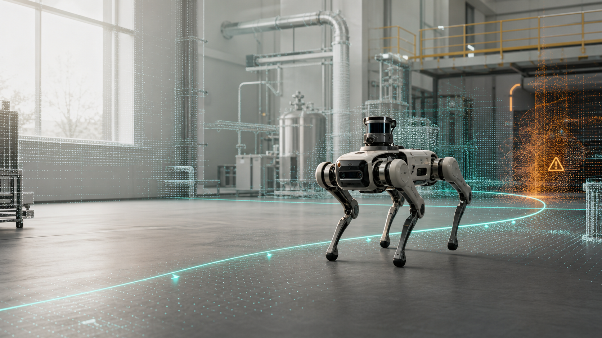

B.Eng. in Robotics Engineering
Core coursework includes robotics, electrical engineering, digital circuits, analog circuits, robot modeling and simulation, automatic control, advanced mathematics, and college English.
Robotics Engineering / ROS / Autonomous Navigation
Undergraduate student in Robotics Engineering at Shenzhen Technology University, focused on building reliable robot systems that connect perception, planning, control, and real-world deployment.

About Me
I am interested in robot autonomy, with hands-on experience in ROS development, reinforcement learning practice, visual recognition, autonomous exploration, motion control, and system integration. My current work centers on 3D navigation and hazard-source search for quadruped robots in complex indoor environments.
News
Education
Core coursework includes robotics, electrical engineering, digital circuits, analog circuits, robot modeling and simulation, automatic control, advanced mathematics, and college English.
Projects
Improving 3D autonomous exploration and obstacle avoidance for unknown, unstructured indoor scenes. The system integrates FAST-LIO mapping, OctoMap risk-cost maps, A* global planning, and EGO-Planner local trajectory optimization, with related results being converted into patent work.
Built a ROS-based motion-control and Sim-to-Real integration framework, optimized PID control, and achieved stable depth and heading control on a physical ROV. Implemented EKF-based multi-sensor fusion modules with unit and integration tests.
Designed a local planner, improved DWA-based autonomous obstacle avoidance, and added OCR recognition to form a ROS perception-planning loop for last-mile delivery. Led technical decomposition, system integration, and functional testing before project acceptance.
Publications
Publications, patents, preprints, and technical reports will be added here as they become public.
Awards
Skills
ROS1/2 / Gazebo / Isaac Sim / navigation stack / technical documentation
SLAM / path planning / reinforcement learning / YOLO perception / sensor fusion
Python / C++ / STM32 basics / simulation-to-hardware integration
Internships
Internships and research assistant work can be added here.
Contact
Interests include ROS development, navigation algorithms, motion control, perception and decision algorithms, and robot research assistant roles.
3149330839@qq.com